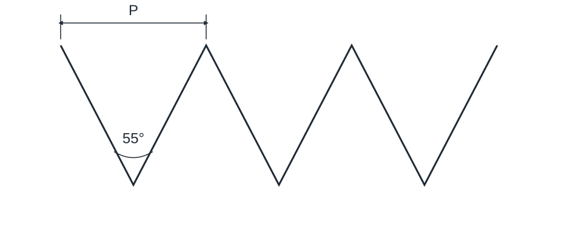

Bicycle threads
Numeric source awaits full verification against the current standard. Original values are retained; do not treat them as verified limits of size.


| Thread | α | Threads per inch | Pitch P [mm] | D = d [mm] | D_2 = d_2 [mm] | D_1 = d_1 [mm] | Application |
|---|---|---|---|---|---|---|---|
| 2.09 × 56 | 60° | 56 | 0.4536 | 2.096 | 1.854 | 1.613 | Spokes and spoke nipples |
| 2.29 × 56 | 60° | 56 | 0.4536 | 2.299 | 2.057 | 1.816 | Spokes and spoke nipples |
| 2.6 × 56 | 60° | 56 | 0.4536 | 2.604 | 2.362 | 2.121 | Spokes and spoke nipples |
| 7.9 × 26 | 60° | 26 | 0.9769 | 7.938 | 7.418 | 6.897 | Steering spindle and front hub axle |
| 9.5 × 26 | 60° | 26 | 0.9769 | 9.525 | 9.004 | 8.484 | Rear hub axle |
| 14.2 × 20 | 60° | 20 | 1.2700 | 14.288 | 13.611 | 12.934 | Pedal spindle |
| *25.4 × 24 | 60° | 24 | 1.0583 | 25.400 | 24.836 | 24.272 | Fork steerer |
| *34.7 × 24 | 60° | 24 | 1.0583 | 34.798 | 34.234 | 33.670 | Bottom bracket and freewheel |
| 7 × 28 | 55° | 28 | 0.9071 | 7.000 | 6.419 | 5.838 | Pedal cone |
| 10.5 × 26 | 55° | 26 | 0.9769 | 10.550 | 9.924 | 9.298 | Freewheel hub cone |
| 33 × 24 | 55° | 24 | 1.0583 | 33.000 | 32.323 | 31.646 | Locknuts |
| *34.9 × 24 | 55° | 24 | 1.0583 | 34.900 | 34.223 | 33.546 | Rear freewheel hub |
| Thread | α | Threads per inch | Pitch P [mm] | D = d [mm] | D_2 = d_2 [mm] | D_1 = d_1 [mm] |
|---|---|---|---|---|---|---|
| 2.09 × 56 | 60° | 56 | 0.4536 | 2.096 | 1.854 | 1.613 |
| 2.29 × 56 | 60° | 56 | 0.4536 | 2.299 | 2.057 | 1.816 |
| 2.6 × 56 | 60° | 56 | 0.4536 | 2.604 | 2.362 | 2.121 |
| 7.9 × 26 | 60° | 26 | 0.9769 | 7.938 | 7.418 | 6.897 |
| 9.5 × 26 | 60° | 26 | 0.9769 | 9.525 | 9.004 | 8.484 |
| 14.2 × 20 | 60° | 20 | 1.2700 | 14.288 | 13.611 | 12.934 |
| *25.4 × 24 | 60° | 24 | 1.0583 | 25.400 | 24.836 | 24.272 |
| *34.7 × 24 | 60° | 24 | 1.0583 | 34.798 | 34.234 | 33.670 |
| 7 × 28 | 55° | 28 | 0.9071 | 7.000 | 6.419 | 5.838 |
| 10.5 × 26 | 55° | 26 | 0.9769 | 10.550 | 9.924 | 9.298 |
| 33 × 24 | 55° | 24 | 1.0583 | 33.000 | 32.323 | 31.646 |
| *34.9 × 24 | 55° | 24 | 1.0583 | 34.900 | 34.223 | 33.546 |
| Thread | Application |
|---|---|
| 2.09 × 56 | Spokes and spoke nipples |
| 2.29 × 56 | Spokes and spoke nipples |
| 2.6 × 56 | Spokes and spoke nipples |
| 7.9 × 26 | Steering spindle and front hub axle |
| 9.5 × 26 | Rear hub axle |
| 14.2 × 20 | Pedal spindle |
| *25.4 × 24 | Fork steerer |
| *34.7 × 24 | Bottom bracket and freewheel |
| 7 × 28 | Pedal cone |
| 10.5 × 26 | Freewheel hub cone |
| 33 × 24 | Locknuts |
| *34.9 × 24 | Rear freewheel hub |